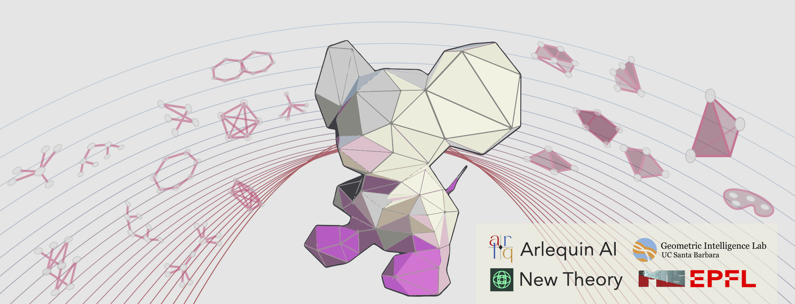

TDL Challenge 2026#
Welcome to the Topological Deep Learning Challenge 2026: Bridging the Gap, sponsored by Arlequin AI and New Theory, and hosted at the second Topology, Algebra, and Geometry in Data Science (TAG-DS) Conference.
Organizers: Guillermo Bernárdez, Lev Telyatnikov, Mathilde Papillon, Marco Montagna, Louisa Cornelis, Louis Van Langendonck, Olga Fink, Nina Miolane.
See also
Link to the challenge repository: geometric-intelligence/TopoBench.
Motivation#

Despite rapid infrastructure advances and deep theoretical connections, the Graph Neural Network (GNN) and Topological Deep Learning (TDL) communities have largely operated in parallel. While these fields are often treated as distinct paradigms, they are profoundly intertwined: a growing body of work studies the interplay between standard message-passing and higher-order representations. Yet, the broader geometric deep learning field still lacks a unified, side-by-side comparison.
The 2026 TDL Challenge: Bridging the Gap sets out to unite these worlds. We invite participants to contribute and implement recent State-of-the-Art (SOTA) models across two dedicated tracks: Track 1 for GNNs, and Track 2 for TNNs.
For the first time, the TDL Challenge will go beyond implementation to feature a rigorous performance analysis of the submitted models. To achieve a truly objective comparison, both tracks will be evaluated through a shared pipeline powered by TopoBench [Telyatnikov et al. 2025] and GraphUniverse [Van Langendonck et al. 2026]. By leveraging GraphUniverse’s framework for generating controlled synthetic graphs, models will be tested against specific structural properties. This will allow both communities to gain insight on how different architectures from both domains handle varying degrees of homophily, heterophily, and complex degree distributions.
Through this shared benchmarking ecosystem of GNNs and TNNs, we aim to formulate data-driven answers to long-standing scientific questions:
Structural Sensitivity: How do specific graph properties (e.g., severe heterophily) impact the performance of classical GNNs versus their higher-order topological counterparts?
The Topological Component: Under what specific data regimes and controlled environments do TDL models consistently provide unique capabilities over standard SOTA GNN approaches (if any)?
Description of the Challenge#
We propose that participants implement recent, SOTA message-passing models from either the GNN or TDL literature. The core objective is to rigorously evaluate how these different architectures behave under specific, controlled topological conditions.
To achieve this, participants will integrate their models into the TopoBench ecosystem and evaluate them using synthetic datasets generated by GraphUniverse. By leveraging this framework, participants will conduct a performance analysis that tests their implemented models against strict, predefined graph properties—such as varying homophily/heterophily ratios and complex degree distributions. We will publish a leaderboard on this website for results to be tracked live.
Embracing Modularity. Beyond just the core message-passing backbone, we strongly encourage participants to take full advantage of TopoBench’s modular architecture. For example, if your chosen SOTA model relies on a novel feature encoder, a specialized readout mechanism, or a custom loss function, you can seamlessly integrate these components into the pipeline. This will help enrich the TopoBench ecosystem with highly reusable modules for future research across both communities. Note that no minimum training performance is required and the top-performing model might not necessarily win (see Evaluation Criteria).
To foster fair and structured comparison, the challenge is divided into two distinct tracks:
Track 1 — Graph Neural Networks (GNNs)#
Focuses on classical, pairwise message-passing architectures operating strictly on graph structures (e.g., modern GCNs, GATs, or deep MPNNs).
Track 2 — Topological Neural Networks (TNNs)#
Focuses on higher-order message-passing models that leverage rich topological domains (e.g., Simplicial, Cellular, or Hypergraph Neural Networks).
While the tracks are separate, both will share the exact same evaluation pipeline and controlled datasets. Participants are tasked with building the model, integrating it into the benchmarking suite, and reporting how its performance scales across different structural regimes.
Reward Outcomes#
⭐ White paper: Every submission that meets the requirements will be included in a white paper summarizing the challenge’s findings (planned via PMLR through Topology, Algebra, and Geometry in Machine Learning/Data Science 2026). Authors of qualifying submissions will be offered co-authorship. [1]
🏆 Cash prizes: Two winning teams (one per track) will be announced at TAG-DS 2026 during the Awards Ceremony.
💰 Track 1 (GNNs): 1st place $1,000 USD, 2nd place $400 USD (sponsored by New Theory).
💰 Track 2 (TNNs): 1st place $1,000 USD, 2nd place $400 USD (sponsored by Arlequin AI).
💰 Honorable mentions: $700 USD split across other outstanding submissions (additional evaluation notebook with further benchmarking, particularly challenging implementations, participants who submit multiple high-quality submissions, etc).
🌴 Research internship — Geometric Intelligence Lab, UCSB (USA): A team, pending evaluation results and interest, will be invited for a visit of up to two months at the Geometric Intelligence Lab, University of California, Santa Barbara. During the visit, winners will work on cutting-edge methods and applications of GNNs and TDL. Travel costs will be reimbursed and financial assistance for lodging will be provided. [2]
🏔️ Research internship — IMOS Lab, EPFL (Switzerland): A team, pending evaluation results and interest, will be invited for a research internship at the Intelligent Maintenance and Operations Systems (IMOS) Lab at EPFL in Lausanne, Switzerland. Winners will perform research in a world-class academic environment. MSc enrollment at the time of the internship is required. Financial assistance for lodging will be provided; winners will likely need to secure a visa and work authorization.
Note
Organizers reserve the right to reallocate prize money between tracks in the event of a significant disparity in the number or quality of submissions.
Deadline#
The final submission deadline is August 12th, 2026 (AoE). Participants may continue modifying their PRs until this time.
Guidelines#
Eligibility: Participation is free and open to all. However, for legal reasons, individuals affiliated with institutions that appear in the sections of the Restricted Foreign Research Institutions list are not eligible for the reward outcomes of the challenge — including the cash prizes, internships, and co-authorship on the white paper summarizing the challenge findings.
Registration: To participate in the challenge, participants must (1) open a Pull Request (PR) on TopoBench and (2) fill out the Registration Google Form with their PR and team information. Each submission (i.e., each PR) must be accompanied by a Registration Form to be valid.
Picking a Model: Please refer to the open Pull Requests in TopoBench (see open PRs) to see which architectures are already being implemented in each track. We encourage a diverse representation of recent SOTA models, so please check open PRs to avoid duplicating efforts.
Submission: For a submission to be valid, teams must:
Submit a valid PR before the deadline.
Fill out the registration form before the deadline.
Ensure the PR passes all integration tests for the TopoBench and GraphUniverse evaluation pipeline.
Tag the PR with the appropriate track (one of:
track-1-gnn,track-2-tnn).Respect all code, documentation, and submission requirements. Note: no minimum training performance is required.
Run the official GraphUniverse Jupyter Notebook on the implemented model and include the automatically generated results file in the PR.
Model Implementations:
Each PR may contain at most one core model architecture.
If a model supports multiple significant variants or parameter configurations, the PR should include separate configuration files for each variant to ensure proper integration with the evaluation pipeline.
Teams:
Teams are allowed, with a maximum of 2 members. (If you wish to form a larger team, please contact the organizers — see the Questions section — for discussion and approval.)
The same team can submit multiple models through different PRs. Make sure to register on the Google Form (link) for each PR.
The same team can participate in both challenge tracks.
Early submissions:
We strongly encourage participants to submit PRs early. This allows ample time to resolve potential integration issues with the synthetic evaluation datasets.
In cases where multiple high-quality submissions cover the exact same model architecture, earlier submissions will be given priority consideration.
Submission Requirements#
A submission consists of a Pull Request (PR) to TopoBench. The PR title must follow this format:
Track: [Track1|Track2]; Team name: <team name>; Model: <Model Name>
Submissions must implement models already proposed in the literature and must cite the associated publication or pre-print in the PR description.
Core Requirements (Both Tracks)#
Backbone — Required
Implement your model as a
torch.nn.Moduleand store it in:topobench/nn/backbones/{domain}/{model_name}.pywhere
{domain}is one ofgraph,simplicial,cell,hypergraph,combinatorial, ornon_relational(Track 1 usesgraph; Track 2 uses the appropriate topological domain).Note
The backbone is automatically discovered by TopoBench’s
ModelExportsManager— no manual registration is needed.Hydra Configuration — Required
Provide a YAML configuration file for your model at:
configs/model/{domain}/{model_name}.yamlThis file must specify the full
TBModelcomposition:feature_encoder,backbone,backbone_wrapper, andreadout. Use an existing config (e.g.,configs/model/graph/gcn.yamlfor Track 1,configs/model/simplicial/sccnn.yamlfor Track 2) as a template.Results as Produced by Provided Notebook — Required
For the first time this year, we are providing a lightweight benchmarking task to compare all submitted models. Run the provided Jupyter Notebook on your model at:
TopoBench/2026_tdl_challenge/run_evaluation.ipynbThis will automatically produce a
results.jsonfile containing your model’s results and computational complexity on the provided tasks. Your PR must include this results file. If you do not have access to any GPU resource, please reach out to the challenge organizers for help.
Optional Components#
Custom Feature Encoder (only if needed)
If your model requires non-standard input preprocessing, implement a custom encoder in:
topobench/nn/encoders/{encoder_name}.pyYour encoder class must inherit from
topobench.nn.encoders.base.AbstractFeatureEncoderand implement aforward(data)method returning atorch_geometric.data.Dataobject. It is automatically discovered via theLoadManager.Custom Readout (only if needed)
If your model requires a non-standard output aggregation strategy, implement a custom readout in:
topobench/nn/readouts/{readout_name}.pyYour readout class must inherit from
topobench.nn.readouts.base.AbstractZeroCellReadOut. It is automatically discovered viaReadoutExportsManager.Custom Backbone Wrapper (only if needed)
If your model has non-standard output handling (i.e., the standard
GNNWrapperor domain wrappers intopobench/nn/wrappers/are insufficient), implement a custom wrapper in:topobench/nn/wrappers/{domain}/{model_name}_wrapper.pyYour wrapper must inherit from
topobench.nn.wrappers.base.AbstractWrapper.Custom Loss (only if needed)
If your model requires an auxiliary or custom training loss (beyond the standard task loss), implement it in:
topobench/loss/model/{ModelName}Loss.pyYour loss class must inherit from
topobench.loss.base.AbstractLossand implementforward(model_out, batch). It is automatically discovered via theLoadManager. Reference it in your model config underbackbone.loss._target_(seeconfigs/model/graph/graph_mlp.yamlfor an example).
Testing — Required#
Unit Tests. All contributed files must pass the pre-existing unit tests. Any method or class not currently covered must be accompanied by new test files placed in the appropriate subdirectory mirroring the source structure:
Contributed File |
Test Location |
|---|---|
|
|
|
|
|
|
|
(test alongside backbone or in |
Each test file should include functions that correspond one-to-one with
contributed classes and methods (see test/nn/backbones/graph/test_graphmlp.py
as an example).
TopoBench uses Codecov to measure coverage. Your PR must match or exceed 93% coverage. The Codecov report will appear as a bot comment on your PR after CI runs.
Pipeline Test — Required. Fill in test/pipeline/test_pipeline.py with
your model and a compatible dataset to demonstrate that the full training
pipeline runs successfully end-to-end:
DATASET = "graph/MUTAG" # or another compatible dataset
MODELS = ["graph/your_model"] # your config path under configs/model/
The evaluation notebook provided with the challenge must also run successfully with your submitted model. No minimum training performance is required — the goal is to evaluate architectural correctness, not accuracy.
Note
The results.json produced by the evaluation notebook and committed to
your PR feeds the 2026 Challenge Leaderboard.
It is refreshed every two days from PRs labeled track-1-gnn or
track-2-tnn — make sure your PR carries the correct label so your run
is picked up automatically.
Tip
For Track 1 models that map directly onto PyG’s standard GCN/GAT/GIN
API, the existing GNNWrapper and AllCellFeatureEncoder can be
reused without modification. For Track 2 models, inspect the existing
simplicial/cell/hypergraph wrappers in topobench/nn/wrappers/ for the
closest analog.
Evaluation#
Award Categories#
The top two submissions per track will be awarded cash prizes:
Track 1: Best and second best GNN model implementations
Track 2: Best and second best TNN model implementations
Additionally, two teams will be selected for invited visits across both tracks based on overall quality, level of difficulty, and impact of contribution. Honorable mentions will also be awarded and, for the first time this year, be given cash prizes.
Evaluation Procedure#
A panel of TopoBench maintainers and collaborators will vote using the Condorcet method to select the best submission in each track.
Evaluation criteria include:
Correctness: Does the submission correctly implement the SOTA model as it is described in the literature? Modifications to respect TopoBench computational requirements are allowed.
Code quality: How readable and clean is the implementation? How well does the submission respect the requirements (unit tests, memory usage, and so on)?
Benchmark on GraphUniverse datasets: Is the model correctly benchmarked on the GraphUniverse datasets as provided? Does the model produce reasonable results?
Documentation & tests: Do the docstrings clearly describe the code? Do the docstrings make explicit references to the original equations in the paper/preprint associated to the model, and/or the original model implementation? Are unit tests robust?
Important
These criteria do not reward final model performance on the dataset. The goal is to deliver well-written, usable model implementations and infrastructure that enable further experimentation and insight.
A panel of TopoBench developers and TDL experts will decide on the two teams to be invited for visits, pending interest as indicated in their Registration Forms. Internship opportunities and cash prizes are not mutually exclusive.
Questions#
Feel free to contact the organizers at topological.intelligence@gmail.com.